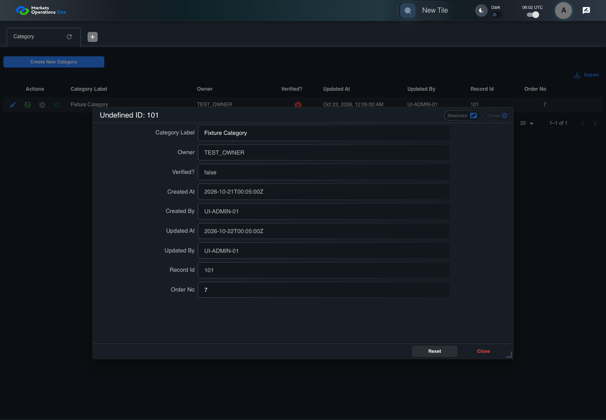

UI-RISK-002 administration source risk with live evidence
PASS · application/run-050/ui-risk-002-administration-source-risk-with-live-evidence-75245f7f210b-attempt-1 · ACTUAL_APPLICATION_LOCAL_SERVICES
Actual React administration screens. Controlled browser credentials, role, records, and BFF responses. Save probes persist the received UI payload without replacing it with expected values. Declared clock emulation controls field timers. Proposed accessibility and source-risk expectations remain separate from business approval.
2026-10-22T06:02:44.264Z to 2026-10-22T06:02:48.922Z
Assertions and result · Artifact manifest · Exact run inputs and source hashes
Result SHA-256:927edaf06dfae70ba627509f9bb600d46ab2be80b3ffeb2660994c95417e8032Screenshot capture: CAPTURED. Named frames: 6.
Step screenshot evidence: COMPLETE. 5/5 canonical steps have execution screenshots.
Canonical step timeline
Given Admin A is authenticated as fixture UI-ADMIN-01 with the case-specific permissions
Execution: PASSED.1. step-01 Visible state after step 1: Given Admin A is authenticated as fixture UI-ADMIN-01 with the case-specific permissions
2026-10-22T06:02:46.374Z · 1440×1000
Step: /Users/lushevol/code/github/ratan-release-impact/workbench/tasks/ui-test-coverage-20261022/test-cases.md:10173
SHA-256:cafbedf45f1f09a3f8ffa78b936d3d5546218caa1522b1d3fac0fa558ebbd6b9And Category record 101 edit form has unsaved changes
Execution: PASSED.2. step-02 Visible state after step 2: And Category record 101 edit form has unsaved changes
2026-10-22T06:02:47.603Z · 1440×1000
Step: /Users/lushevol/code/github/ratan-release-impact/workbench/tasks/ui-test-coverage-20261022/test-cases.md:10174
SHA-256:98b2c04f93fd957f52e0ce3c91414e1e38a4de24eeffc5156e3cf4bcfd05d92eWhen Admin A clicks button named "Reset" inside the dialog named "edit ID: 101" inside the "Category" administration tabpanel
Execution: PASSED.
3. step-03 Visible state after step 3: When Admin A clicks button named "Reset" inside the dialog named "edit ID: 101" inside the "Category" administration tabpanel
2026-10-22T06:02:47.788Z · 1440×1000
Step: /Users/lushevol/code/github/ratan-release-impact/workbench/tasks/ui-test-coverage-20261022/test-cases.md:10175
SHA-256:61bd4a1ce368d2b20b9a4222e59d0dea82c3cb2c808cef24805bbc60c62031ceThen textbox named "Category Label" inside the dialog named "edit ID: 101" inside the "Category" administration tabpanel has value "Fixture Category"
Execution: PASSED.4. step-04 Visible state after step 4: Then textbox named "Category Label" inside the dialog named "edit ID: 101" inside the "Category" administration tabpanel has value "Fixture Category"
2026-10-22T06:02:47.902Z · 1440×1000
Step: /Users/lushevol/code/github/ratan-release-impact/workbench/tasks/ui-test-coverage-20261022/test-cases.md:10176
SHA-256:7e1ad8f78c0e0c2aa5ed30655045faa8eb14003a12870b8abe614bec7554f5d9And button named "Update" inside the dialog named "edit ID: 101" inside the "Category" administration tabpanel is visible
Execution: PASSED.5. step-05 Visible state after step 5: And button named "Update" inside the dialog named "edit ID: 101" inside the "Category" administration tabpanel is visible
2026-10-22T06:02:48.032Z · 1440×1000
Step: /Users/lushevol/code/github/ratan-release-impact/workbench/tasks/ui-test-coverage-20261022/test-cases.md:10177
SHA-256:6a8a332bdd6a960d6706fb3233dbe3123e6bba5b7392d9dce2743f1acbf57cd5


Additional named frames

Screenshots establish visible state only. Assertions and traces support functional claims.